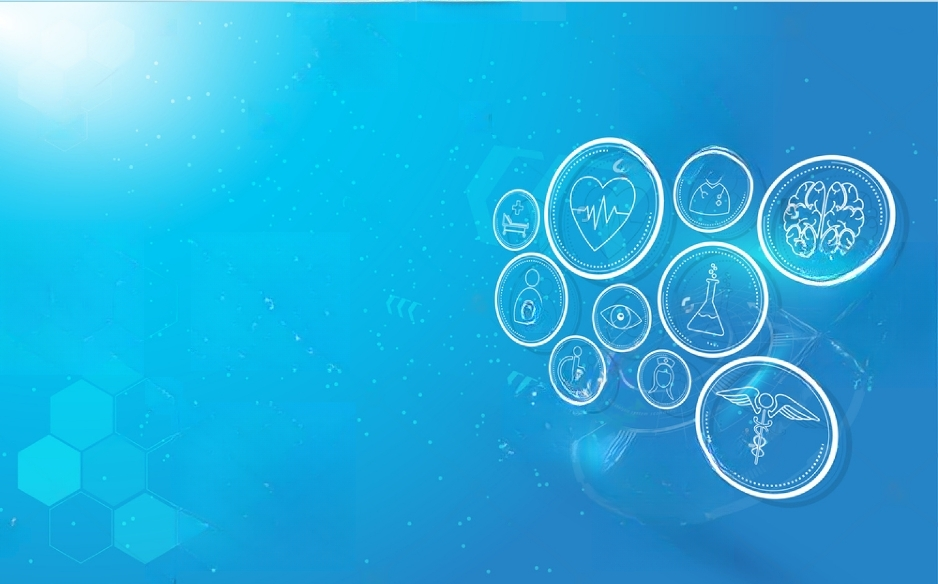
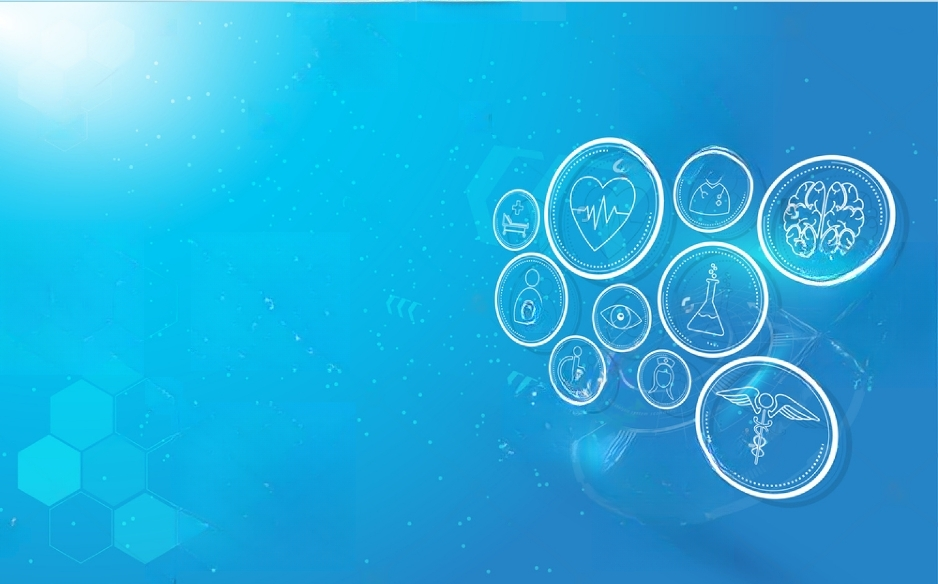

CITY HOSPITAL
CITY HOSPITAL
 

We are provide the best medical services for you.
Welcome City Hospital, your trusted source for comprehensive healthcare services.
Our dedicated team of medical professionals is committed to providing personalized and compassionate care to patients of all ages.
Whether you require routine check-ups, specialized treatments, or emergency medical attention, we are here to address your healthcare needs.
At City Hospital, we strive to be at the forefront of medical advancements and deliver the highest quality of care. Our facility is equipped with state-of-the-art technology and staffed with experienced physicians, nurses, and support staff who are dedicated to your well-being. We believe in a holistic approach to healthcare, focusing not only on treating illnesses but also on promoting overall wellness.

DOCTORS
JOIN OR LOGIN DOCTORS STAFFPATIENTS
JOIN OR LOGIN PATIENTABOUT US
- We are committed to improve our services toward international standard.
- We also provide health education to the patient.
OUR SERVICES
Laboratary Service
Our laboratory services provide comprehensive testing and analysis for a wide range of industries and applications. With state-of-the-art equipment and a team of skilled scientists and technicians, we offer accurate and reliable results to meet your testing needs.
24/7 Service
Our 24/7 service is designed to provide round-the-clock assistance and support to our valued customers. With our unwavering commitment to customer satisfaction, we ensure that help is always just a phone call or message away, no matter the time of day or night.
24/7 Ambulance
Our 24/7 ambulance service provides immediate medical assistance around the clock. Our team of highly trained professionals is dedicated to ensuring prompt and efficient emergency care. With state-of-the-art equipment and rapid response times, we prioritize patient safety and well-being. Trust us for reliable and dependable medical transportation whenever you need it.
Medicines
Medicines are substances used to prevent, treat, or alleviate symptoms of various diseases, disorders, or conditions in humans. They can come in different forms such as pills, liquids, creams, or injections. Medicines work by targeting specific biological processes in the body to restore normal functioning, relieve pain, reduce inflammation, fight infections, or manage chronic conditions.
Eye Care
Eye Care refers to the practice of maintaining and preserving the health of the eyes. It involves regular check-ups with eye care professionals, such as optometrists or ophthalmologists, who evaluate vision and screen for eye diseases. Proper eye care also includes adopting healthy habits like wearing protective eyewear, using lubricating eye drops, and following a balanced diet to support optimal eye health.
Free consaltation
Looking for expert advice and guidance? Our free consultation service is here to assist you. Whether you need assistance with legal matters, financial planning, career counseling, or any other area, our experienced professionals are ready to provide you with personalized advice tailored to your specific needs. Take advantage of our free consultation today!
OUR DOCTORS

Dr. Chamila Shyamike
Expert AnesthesiologistsDr. Nadeera Marzsook
Expert Cardiologists
Dr. Dulangi Subramaniam
Expert Endocrinologists
Dr. Magalage Thilanka
Expert Family Physicians
Dr. Sadini Hasalabuddhi
Expert Hematologists
Dr. Anooma Bandara
Expert NephrologistsClIENT'S REVIEWS

Sam Livera
I had a fantastic experience with Dr. Johnson. He was knowledgeable, attentive, and genuinely cared about my well-being. His expertise and professionalism put me at ease, and I would highly recommend him to anyone seeking top-notch medical care.
Leo Brayan
Dr. Dulangi Subramaniam exceeded my expectations with his exceptional bedside manner and thorough approach. He took the time to listen to my concerns, provided clear explanations, and developed a personalized treatment plan. I felt confident in his expertise and left the clinic feeling well taken care of.
John Moxley
I am extremely grateful to Dr. Patel for her compassionate care. She took the time to understand my medical history, answered all my questions, and provided comprehensive guidance. Her warm demeanor and expertise made me feel comfortable and confident in the course of treatment. Highly recommended!
OUR BLOGS
Emergency Dentist
Emergency Dentists is always adding new and informative dental care articles to their library. They meet with dentists, discuss topics they find to be important, and then disseminate that information to everyone online. They are committed to ensuring readers learn everything there is about oral health, so they can do what is needed to keep their teeth and gums healthy.
Screening for Kidney Cancer
Kidney Cancer is a type of cancer that begins in the kidneys. It is estimated that kidney cancer accounts for around 2% to 3% of all cancers worldwide. Early detection of kidney cancer is crucial for improving treatment outcomes and increasing survival rates. Let's explore the importance of early detection and the role of screening in identifying kidney cancer at its early stages.
RightPatient
With the mission to provide the most advanced and wide-ranging patient identification solution to increase patient safety while reducing healthcare costs, RightPatient raises awareness through its blog, with relevant articles that tackle medical identity theft, patient safety protocols, and the likes. Generally, RightPatient aims to improve the quality of care through a holistic and safe patient experience.
CONTACT US
Our Address
27700 Medical Center Rd, Mission Viejo, CA 92691, United States
Phone: +1 949-364-1400,+1 949-364-1500